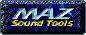

|
|
The Scene Portal - The Music Scene |
|
Modules are digital music files, made up of a set of samples (the instruments) and sequencing information, telling a mod player when to play which sample on which track at what pitch, optionally performing an effect like vibrato, for example. Thus mods are different from pure sample files such as WAV or AU, which contain no sequencing information, and MIDI files, which do not include any custom samples/instruments. Mods are extremely popular in the demo world and offer a way of making music of an acceptable level of quality rather cheaply. With the advent of high-quality sound hardware, new generations of mods may even rise to a sound quality nearing that of professional equipment.
Text taken from 'FREQUENTLY ASKED QUESTIONS (FAQ) LIST FOR ALT.BINARIES.SOUNDS.MODS'
|
|
|
No Error -
| The Scene Music News (reviews and goodies too)
|
|
|
Nectarine -
| Nectarine is the first demoscene radio broadcasting every days some of the best songs done by sceners since 1988
|
|

|
Maz Sound Tools
| A large site that includes reviews of trackers, players, encoders as well as CD and soundcard tools
|
|
|
United Trackers
| We are a non-profit Internet Organization of Music Software Developers, Music Lovers, and Musicians, contributing to the Internet Music Scene with their tracked work in MOD, MTM, S3M, ULT, XM, IT, and related formats
|
The Music Scene - Archives and Resources
ModPlug Central - Our goal at MODPlug.com is to provide newcomers with the information that they need to enjoy the Free Music Scene, as well as provide veterans of the scene with Resources and information to help them expand their horizons
Trax In Space - The music search e-shop site
Chip Music Archive
Chip Tune - Over 2000 individually selected chiptunes
The Scene United - MP3, MODS, Buzz and Archives
Hornet - Music reviews and disks from 1992 to 1998
The Music Scene - Reviews/Magazines
goodstuff (the scenemusic guide) - this site is dedicated to quality music, made by musicians from the demoscene. our staff reviews only quality tunes which are, from our point of view, something really special you should not miss to listen to.
Music Massage - independent module reviews
Csound Magazine
The Music Scene - Groups
Abnoral Music
Brainshakaz - the idea behind brainshakaz is to release some wicked drum&bass and breakbeat vibes on 12" vinyl
CBR - cbr spreads digital music in mod and mp3 format since 1995
D-cibel - design the noise
Electronic Music Productions
Exogenic Records - Exogenic records was founded in 1996 to release electronic music by Finnish artists
Five Musicians
Force Ten - Much as changed since our humble beginnings but one thing didn't: we're still making music, we're still around
Fusion Music Crew - Where Art Meets Perfection
Harmful Konektion - Tracked D'n'B/Tekkno 2 your earz ..
Hellven - Digital music group
Immortal Coil - A tribute webpage
Injection Squad - Ready to rock the music scene!
J'ecoute - return of the cool
Konsumer
Kosmic - Is an international not-for-profit organization dedicated to providing free access to original music on the Net, and exploring new ways of distributing artistic creations to the widest possible audience
Kyoto Republik - To love is to suffer, to be loved is to cause suffering
Language Lab
Level-D RecordsMusic is the blood of life..
Logic Music - Electronic music by the scene
low.frequency.neenjas - Norwegain Elektronikz
Miasmah - Chillout with Miasmah
Milk - Internet module and music label
Mono Sound Laboratories
Moplayaz - The styles we prefer are d&b, jungle, sci-fi jazz, dub and trip-hiphop
Mute2k
Nash Meja - Home of experimentations
Noise - New Objectives In Sound Exploration
Park Allstars - take a walk in the park and enjoy our little reign of melody and coziness
Phluid - From the remnants of the ACiD music division, Pinion initiates a group on the cutting edge of technology to create and deliver high quality music over the Internet
Phobic Music Productions - The home of the underground music group called Phobic. Est. 1996 and has released in a steady flow since that time. Quality before Quantity
PLF Productions - poffelipoff music anno: 1997-20xx
quikphix records - Free experimental electronic music
Reaktio Records - techno evolution from detroit to helsinki - humanitarian techno
Real Smokers - Free quality music
Rebound
Setup
SCP World HeadQuarters - A speedcore/terror/industrial tracker group..
Superstars
Tequila - Recycled oldskool
Tetris - Iis a techno label based on core players but guest releases are warmly welcome
TheKool Kommunity
Theralite - We are a collective of musicians that intensively use computers to create electronic music in a wide range of styles
Tokyo Dawn Recordings - Is an idealistic, non-profit-orientated, friendship-based group dedicated to serving the underground with high quality drum'n'bass/triphop music
Tokaimura State - we like to walk in wet streets without shoes, wearing the headphones, eat tomatos and feel the nostalgia
Tranzite
Ultra Beat - Free original psychedelic trance
Vivid - Electronic music, artwork & way of life
Zaag - zaag is 'saw' in Dutch
The Music Scene - Personal Pages
Andromeda - by Morgan Norrestam
iph's goa/trance - If you like GOA & PSYCHEDELIC TRANCE please visit!
lrs. - This page contains music, mainly in the genre electronica, made by me. a confused boy. seventeen yrs. ov age.
The Music Scene - Free Trackers
The Music Scene - Free Samples
The Music Scene - Free Players
ModPlug - The one and only webpage embeded module player
ModPlug Player - A freeware module player for Win9x/NT/2000 based on the popular ModPlug
Open CubicPlayer - Open sourced DOS player that supports nearly every module format in existance
Pulse PLayer - A freeware Win9x/NT/2000 player that supports nearly every module format in existance
Sonique - A freeware stylish Mpeg, MOD, XM, IT, S3M, WAV, CD Win9x/NT/2000 player
XMPlay - XMPlay is a Windows 9x/NT music player, supporting the MO3, XM, IT, MOD, S3M, MTM formats
|